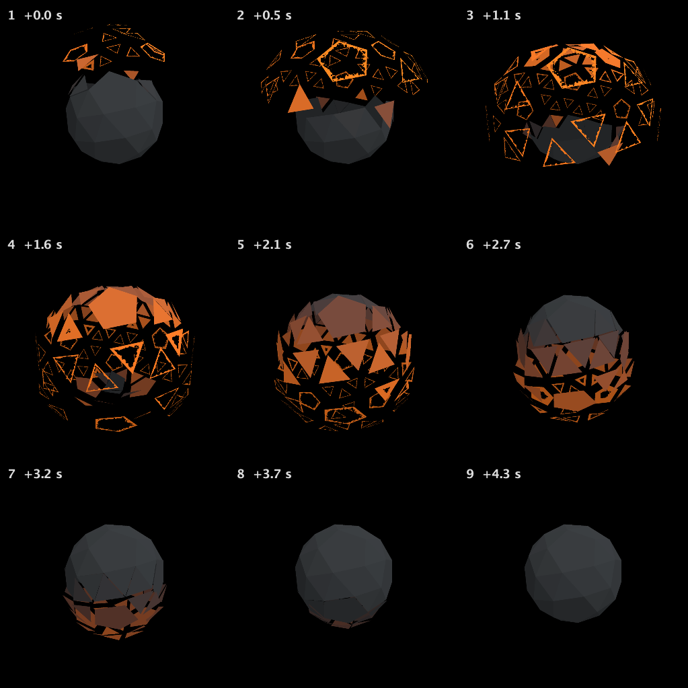

Field · AI4 / A polytope that bursts and burns / turn 06
Is it what I asked for?
The recorded exchange: the request, the tool activity, every image the tools returned to the model, and its reply. Expand tool activity to read the steps; open an image to see it full size.
The person, in Field, before this turn
- Ran the polytope box. Its Kotlin ran again, which built the mesh the model had written, and the window drew the burn-through as frames; the slots stayed at
r6-1d055e9b75e6.
You
I ran the box, so your new mesh is live now. Look at a whole cycle and tell me plainly whether it's what I asked for: ragged glowing frames at the burst, whole when home.
Tool activity · 3 steps
Starting AI conversation
ObserveStackAutoSlot finished (4732 ms)
Completed

AI4 · gpt-6-astra / openai
Yes—the live cycle now matches what you asked for.
- Frames 2–4: the far-flung faces lose most of their interiors, leaving thin orange frames with visibly uneven, torn inner edges—not little dots.
- Frames 4–8: the openings fill back in as the faces return and cool.
- Frame 9: the solid is closed and dark, with no visible burn-through holes.
Some peak rims are almost wire-thin, but they remain recognizable face outlines rather than disappearing. I checked the 4.8-second cycle without changing anything.